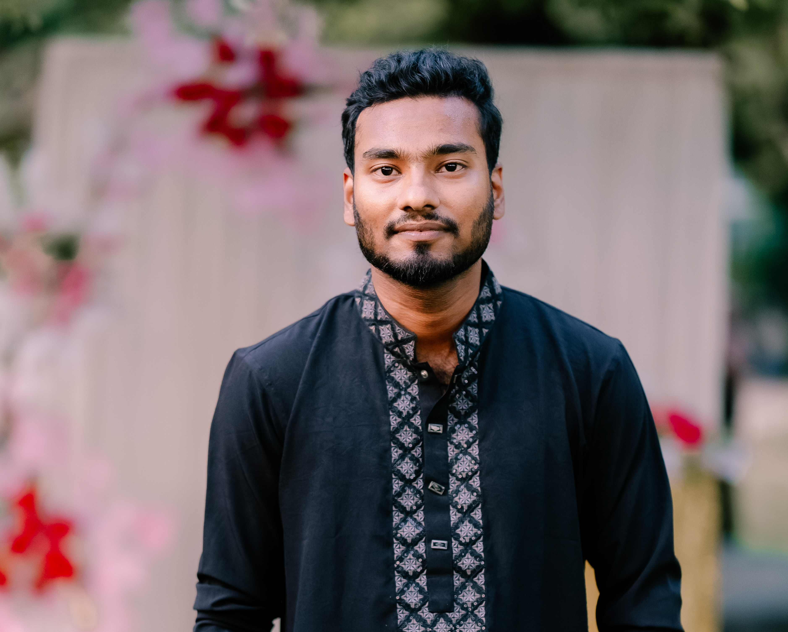

contact
call01518955024
mailmahimferdous494@gmail.com
location_onmodarn,rangpur
career Objective
I am a dedicated Management student with a strong interest in business strategy,
leadership, and organizational development. I am eager to apply my academic
knowledge in real-world situations and continuously develop my professional skills.
Languages
English
French
Italian
Skills
- Team work
- Creativity
- Open-mindedness
- Punctuality
- Photoshop
- Video
Interests
public
photo_camera
headphones
theater_comedy
hiking
menu_book
Md Mahim Ferdous
Internship / Student Job
Education
Hospitality & Tourism, B.S.
California State University | 20XX – 20XX
- F&B management
- Travel and tourism
- Revenue management
- Law and ethics
High School Diploma
Los Angeles High School | 20XX
- Graduated with honors
- Class valedictorian
- National debate team
- Captain of basketball team
Professional Experience
Catering Services
CATER2U, LA | July 20XX
- Taking inventory
- Assisting in kitchen duties
- Serving event attendees
Fry Cook
POPEYE’S | July 20XX
High school summer job | Junior year
- Prepared and executed dishes
- Kept an organized workstation
Volunteer
Soup Kitchen
Leeza’s Care Connection | December 20XX
- Prepared food for Alzheimer patients
- Food distribution
- Provided emotional support when needed